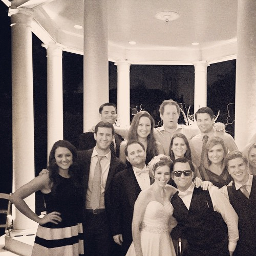
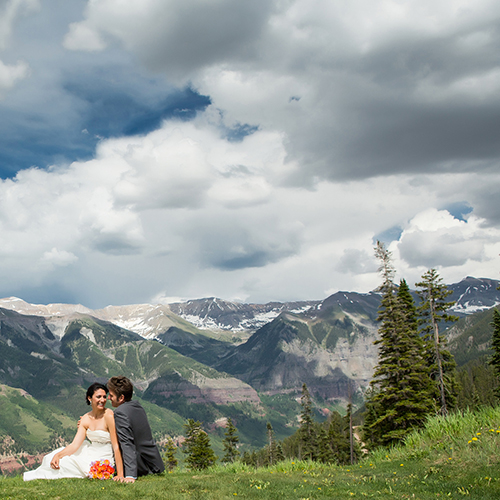
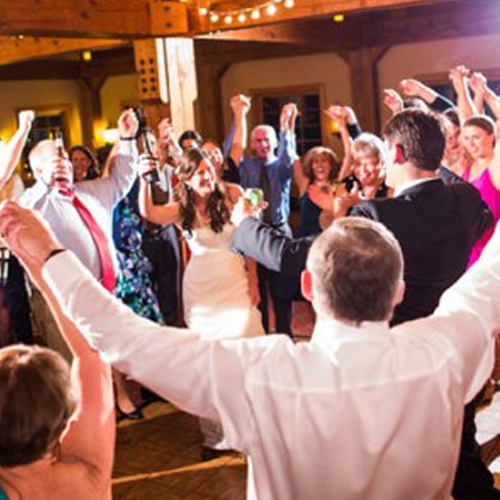

Our Wedding
The ceremony and reception will be taking place the evening of August 28th,
in Telluride. We hope you are able to join us for a fun-filled evening of
celebration!!
Event times will be updated in April, so check back for more details.
Please see below for details on the beautiful venues!
Event attire is semi-formal. The ceremony will take place outdoors, so
please check the weather prior to packing! Late August usually yields highs
in the low 70s and lows around 40 overnight. So will be a nice break
from the hot Texas summer!
Cocktail hour will follow the ceremony, on the deck at Gorrono Ranch. The
reception will then be inside Gorrono, with access to the deck throughout
the evening.
Please see details and pictures below!
Welcome Party



August 27, 2016
9:30 pm to 12:00 am
LOCATION TBD
Following the rehearsal dinner on Saturday evening, we'd love to get
together with everyone who as traveled to Telluride and do some early
celebrating! Please stay tuned for details, and
check back this spring for the location!
Ceremony



August 28, 2016
5:00 pm to 5:30 pm
The free gondola departs from both Telluride and Mountain Village,
and is a 5-7 minute ride to San Sophia. Upon reaching the San Sophia
Station, it is about a 5 minute walk to the ceremony site.
Please plan to board the gondola by 4:30pm, and arrive at the ceremony
site by 4:45pm, to help ensure a prompt ceremony start time.
Reception



August 28, 2016
6:00 pm to 10:30 pm
Following the reception, transportation will be provided for all guests
to Gorrono Ranch. Gorrono is about a five minute drive from the ceremony
site. Cocktail hour will begin at 6:00pm, followed by dinner, drinks,
and plenty of dancing!